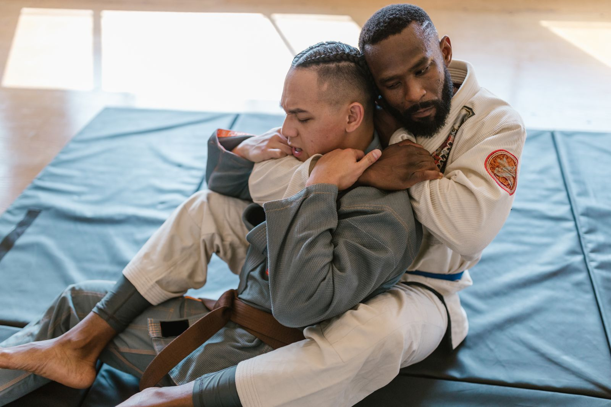

Two Ways In
Choose the route that fits you
 Stock placeholder
For Founders & Business Owners
Stock placeholder
For Founders & Business Owners
Founder Coaching
Start with a decision, a conversation you lead or a responsibility you are weighing in your business.
Explore Founder Coaching
Stock placeholder For Adult AthletesCoaching for Athletes
Start with pressure before competing, focus on a mistake or the demands of a changing sporting career.
Explore Coaching for Athletes